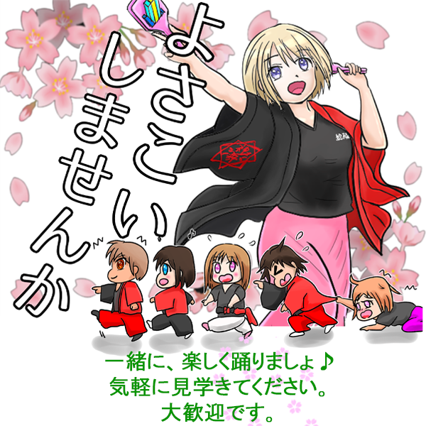

Profileプロフィール
総踊連合 神舞
神舞はこんなところ
「神舞」は、よさこい踊りを通して、西濃地域が益々発展していくことに協力する。
その他、祭り関係に依頼が有れば参加し、みんなで楽しく踊り、先陣きって周りの皆様と一緒に盛り上げていくチームを目的とします。
神舞の特色
・総踊り感覚で、神舞のエントリー枠を使って周りのみんなを呼び込み、一緒に踊ろう。
・幼児～シニアまでの幅広い踊り子たちで、暖かいチームです。
・自然に心から笑顔がこぼれて、笑い声の絶えない楽しいチームです。
・キャンプやバーベキュー、遊びといった楽しいこともやってます。
活動
・商店街活性化を図る活動
・社会教育の推進を図る活動
・文化、芸術又はスポーツの振興を図る活動（よさこいに出場する）
・子どもの健全育成を図る活動（子供たちと一緒によさこいを踊る）
WELCOME MEMBERメンバー募集
WELCOME MEMBER
メンバー大募集
よさこい好きの方はもちろん、お祭り大好き！楽しいこと大好き！踊り大好き！大歓迎です！！
初心者の方も心配ありません。是非、いらしてください！！
興味のある方、鳴子を持って一緒に鳴らしましょ♪
一度、見学にいらっしゃいませんか
～楽しく踊って参りましょう～
練習会場
・池田町総合体育館 多目的ホール
・毎週木曜日 19時～21時
【池田町総合体育館】
〒503-2419
岐阜県揖斐郡池田町小寺７２２−１
Google Mapsで表示する
【お問い合わせ先】
【メールはこちらへ】
